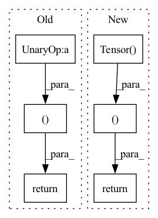

Pattern ID :18839
Before Change
@staticmethod
def backward(ctx, grad_output):
return tensor.Tensor(-grad_output.data ), None
class MatMul(Function):
@staticmethodAfter Change
grad = ops_cpu.neg_backward(grad_output.data)
else:
grad = ops_gpu.neg_backward(ctx.cl_ctx, ctx.cl_queue, grad_output.data)
return tensor.Tensor( grad), None
class MatMul(Function):
@staticmethodIn pattern: SUPERPATTERN
Frequency: 3
Non-data size: 6
Instances Fragment ID: 61116732
Project Name: pabannier/nanograd
Commit Name: cfa262ec2ccafd4370bf2dbe7e19f217ea54ab15
Time: 2021-01-17
Author: pierreantoine.bannier@gmail.com
File Name: nanograd/nn/functional.py
M Class Name: Neg
N Class Name: Neg
M Method Name: backward(2)
N Method Name: backward(2)
M Parent Class: Function
N Parent Class: Function
M File Name: nanograd/nn/functional.py
N File Name: nanograd/nn/functional.py
M Start Line: 379
M End Line: 379
N Start Line: 387
N End Line: 391
Before Change
a, b = ctx.saved_tensors
grad_a = np.ones(a.shape) * grad_output.data
grad_b = np.ones(b.shape) * grad_output.data
grad_a = tensor.Tensor(unbroadcast(grad_a, a.shape))
grad_b = tensor.Tensor(unbroadcast(grad_b, b.shape))
return grad_a, grad_b
class Sum(Function):
@staticmethodAfter Change
grad_a, grad_b = ops_gpu.add_backward(ctx.cl_ctx, ctx.cl_queue, grad_output.data,
a.shape, b.shape)
return tensor.Tensor(grad_a), tensor.Tensor(grad_b)
class Sum(Function):
@staticmethod Fragment ID: 61116733
Project Name: pabannier/nanograd
Commit Name: cfa262ec2ccafd4370bf2dbe7e19f217ea54ab15
Time: 2021-01-17
Author: pierreantoine.bannier@gmail.com
File Name: nanograd/nn/functional.py
M Class Name: Add
N Class Name: Add
M Method Name: backward(2)
N Method Name: backward(2)
M Parent Class: Function
N Parent Class: Function
M File Name: nanograd/nn/functional.py
N File Name: nanograd/nn/functional.py
M Start Line: 313
M End Line: 319
N Start Line: 321
N End Line: 327
Before Change
@staticmethod
def backward(ctx, grad_output):
a = ctx.saved_tensors[0]
return tensor.Tensor(grad_output.data / a.data), None
class Exp(Function):
@staticmethodAfter Change
else:
grad_a = ops_gpu.log_backward(ctx.cl_ctx, ctx.cl_queue, grad_output.data, a.data)
return tensor.Tensor( grad_a), None
class Exp(Function):
@staticmethod Fragment ID: 61116729
Project Name: pabannier/nanograd
Commit Name: cfa262ec2ccafd4370bf2dbe7e19f217ea54ab15
Time: 2021-01-17
Author: pierreantoine.bannier@gmail.com
File Name: nanograd/nn/functional.py
M Class Name: Log
N Class Name: Log
M Method Name: backward(2)
N Method Name: backward(2)
M Parent Class: Function
N Parent Class: Function
M File Name: nanograd/nn/functional.py
N File Name: nanograd/nn/functional.py
M Start Line: 258
M End Line: 259
N Start Line: 255
N End Line: 262